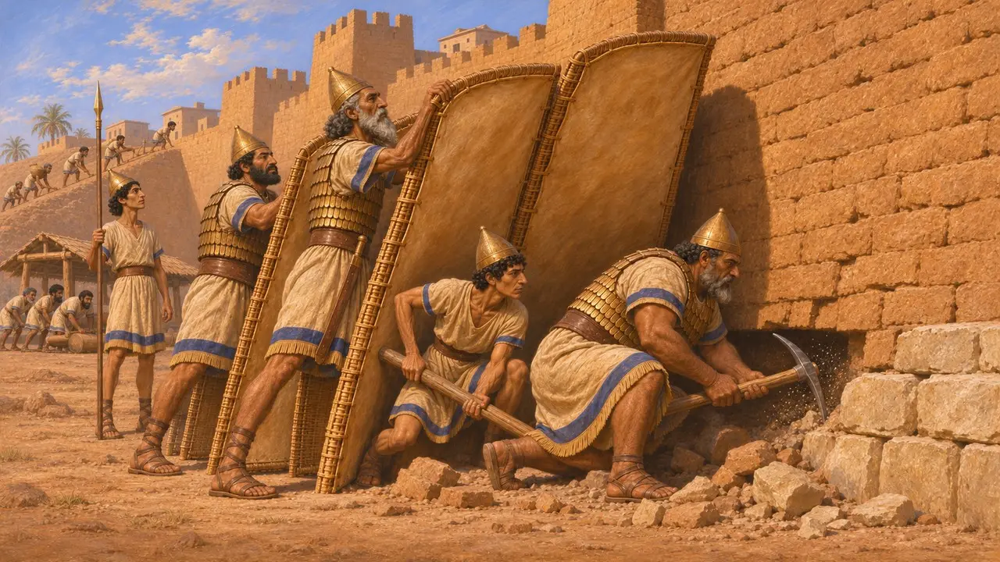
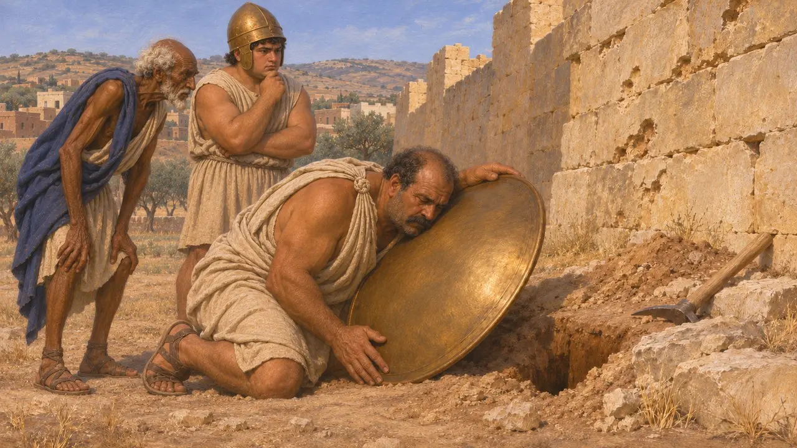
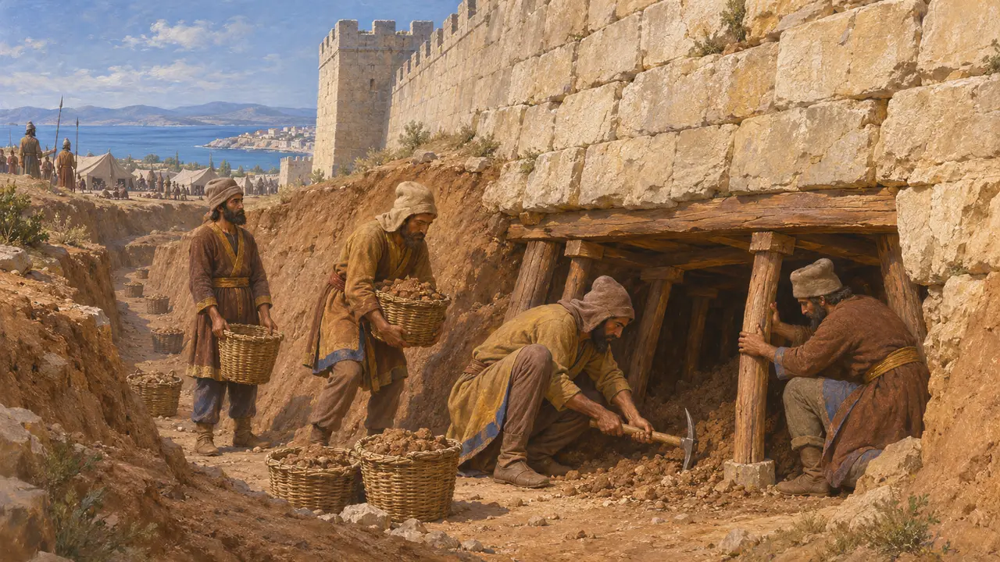
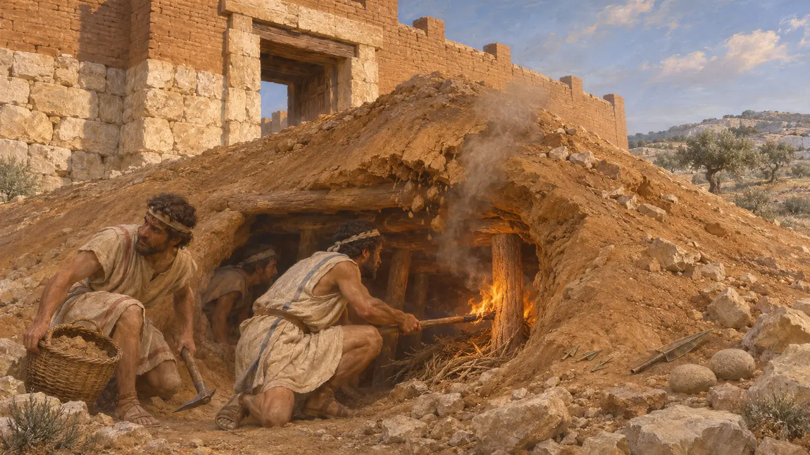
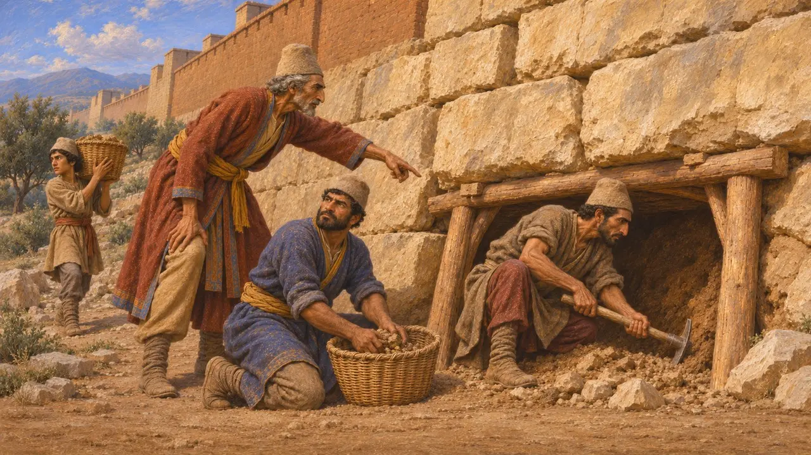

工兵
アケメネス朝時代の攻城戦で城壁の下を掘った兵士たち。紀元前6～5世紀
工兵は古代の攻城戦における掘削者であった。城壁の下にトンネルを掘ったり基礎をこじ開けたりして、その上の石積みを崩落させたのである。ゲームの時代において坑道戦の最も明確な証拠は、リビア、キュプロス、イオニアの城壁都市を攻めたペルシア軍と、それを阻むために守備側が掘った対抗坑道から得られる。
ゲームでは： ゲーム中では、工兵は王の敵に仕え、プレイヤーの壁や塔の下を掘り進むが、どんな兵士にもたやすく倒される。歴史はおおむねその逆である。この時代で最もよく裏付けられた坑道戦は、バルケ、ソロイ、ミレトスでペルシア軍が行ったものだ。

古き近東の技
同時代の記録城壁の掘り崩しは近東における古い技術であった。紀元前9世紀から7世紀のアッシリア宮殿の浮彫には、大きな盾に守られながら、つるはしや梃子で城壁の基部を攻める兵士が描かれている。また、紀元前701年のセンナケリブによるラキシュ包囲の浮彫のように、破城槌や攻城斜路も描かれている。ペルシア軍はこうしたメソポタミアの攻城術の多くを受け継いだと考えられる。
Assyrian palace reliefs from Nimrud and Nineveh; P. B. Kern, Ancient Siege Warfare, 1999

バルケの坑道
古代の記述ヘロドトスによれば、エジプトのサトラップであるアリュアンデスが派遣したペルシア軍は、リビアのバルケを9か月にわたって包囲し、城壁に向けて坑道を掘ったという。バルケの青銅鍛冶は青銅の盾を持って城壁の内側を巡り、空洞の上で盾が鳴る場所を聞き分けて坑道を見つけ出した。守備兵はそこに対抗坑道を掘り、ペルシアの坑夫たちを殺した。ヘロドトスによれば、町が最終的に陥落したのは坑道によってではなく、策略によってであった。
Herodotus 4.200-201

ソロイとミレトス
古代の記述ヘロドトスによれば、イオニアの反乱の際、ペルシア軍はキュプロスのソロイを包囲5か月目に城壁の下を掘り崩して陥落させた。紀元前494年、ラデでの海戦に勝利したのち、彼らは城壁の下に坑道を掘り、あらゆる攻城兵器を用いてミレトスを攻略した。いずれの場合も、坑道掘りは長く犠牲の大きい包囲戦の一部であり、短期の強襲ではなかった。
Herodotus 5.115; Herodotus 6.18

パフォスの攻城土塁の下の坑道
同時代の記録キュプロス島のパライパフォス(クークリア)の発掘で、おそらく紀元前498〜497年頃の反乱の際に、町の北東門に向けて築かれたペルシアの攻城盛り土が見つかった。守備側は盛り土の下にトンネルを掘り、中で火を焚いて崩落させようとした。埋め土からは鏃、槍の穂先、石弾が出土している。これらの遺構は、この時代の坑道戦と対抗坑道を示す最も明瞭な物的証拠の一つである。
F. G. Maier and V. Karageorghis, Paphos: History and Archaeology, 1984

掘ったのは誰か
係争中ペルシア軍が専門の坑夫を抱えていたのか、それとも熟練者の指揮のもとで徴集兵や従属民の兵に掘らせたのかは、同時代のどの史料も語っていない。ヘロドトスはバルカ、ソロイ、ミレトスでの坑道について記しているが、掘った者たちの名も姿も伝えていない。ペルシアの攻城術が専門家に支えられていたのか、大量の労働力に頼っていたのかは未解決の問題であり、現代の見解も分かれている。
P. B. Kern, Ancient Siege Warfare, 1999; P. Briant, From Cyrus to Alexander, 2002
出典
- Herodotus 4.200-201
- Herodotus 5.115; 6.18
- F. G. Maier and V. Karageorghis, Paphos: History and Archaeology, 1984
- P. B. Kern, Ancient Siege Warfare, 1999
- P. Briant, From Cyrus to Alexander, 2002